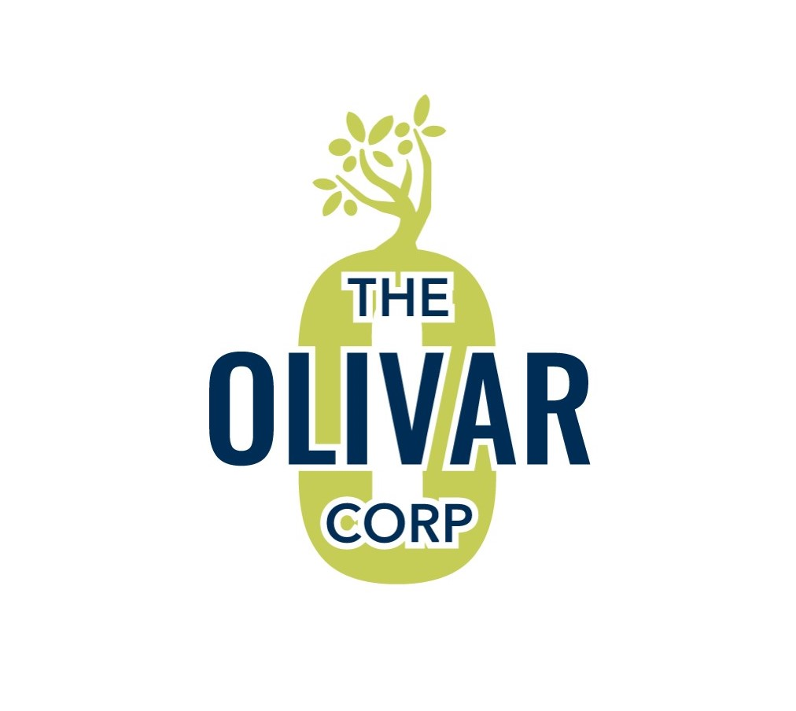
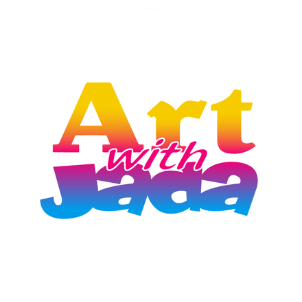

Communitech — 2021
DMS Future Proof
Future Proof is a program that assists businesses with identifying new markets, pivoting their business model, and developing and implementing a deep digital transformation plan.
Tools: Adobe CC, Sketch
About
Digital Main Street (DMS), led by the Toronto Association of Business Improvement Areas (TABIA) and the Ontario Business Improvement Area Association, is an initiative focused on helping small and medium-sized businesses in the retail, hospitality, and trade/service sectors to adopt digital business models.
In partnership with Communitech, I was part of a 'Transformation Team' in their new Future Proofing businesses’ program to the DMS initiative which helped firms to leverage e-commerce solutions and adapt their businesses to become more resilient and competitive as the economy recovers due to COVID-19. I was responsible for graphic design work in a team of five that also included a UX/UI designer, copywriter and 2 digital marketers. In collaboration with my team, we provided specialized and in-depth digital transformation services and support that helped struggling businesses adapt to changes in their respective sector in sprints lasting up to six weeks. Our transformation plans helped businesses create new business models, develop and implement digital marketing strategies, maximize digital tools and more.
Learn more about the program here.

The Olivar Corp
The Olivar Corp is an independently run business owned and operated by Dolores Smith. They specialize in offering authentic, premium and unique extra virgin olive oils and reserve vinegars throughout Kitchener, Waterloo, Cambridge and the GTA.
From the beginning, Dolores wanted to establish a stronger digital presence to not only promote her products but to educate consumers about the purity and benefits of authentic olive oil. With a hard-to-access existing website, little social media presence and branding, we started to recognize how we could help Dolores achieve her goals.
Rebrand
Before & After
These are mockups of the new branding applied to website and social assets.

Moodboards
In terms of their branding, Olivar Corp did not come across as a cohesive or strong brand. I started off by proposing a couple of mood boards to gain a sense of design direction in terms of colours, photography and typography. She ended up liking a mix of the first and second boards as it kept some of the original brand colours but added in an earthy and warm tone.

Proposed Logo Designs
A logo redesign was also advised to keep up with current trends and to fix visual errors. Dolores expressed that she wanted to keep the same colours and symbolism from the previous logo with the ‘O’ and the olive tree. I made sure to include those elements in mind while desiging. There were many complexities in the previous logo, so the new logo aimed to simplify that by reducing minute details. I also created variations of the new logo as I found it appropriate to provide flexibility for the client for different use cases.

Brand Book
A brand book was created as a comprehensive guide for the brand’s new visual language and tone, showcasing logo usage, fonts, colours, voice, social media and website UI. Since the client is very new to the social media space and has not used most platforms, we found it necessary to include an in-depth guide for the different platforms.

Art with Jada
Art with Jada is an art studio for adults and children located in Orangeville. It was established by Jada-Milne Doucette due to her passion for art and teaching. Art with Jada offers classes, private lessons, workshops, camps, and events. They also sell art supplies, kits and materials through their website.
Jada came to us wanting helping with refreshing the brand's image, updating her website and socials, along with bringing new marketing ideas to the table.
Rebrand
Before & After
These are mockups of the new branding applied to website and social assets.

Moodboards
In terms of their branding, Art with Jada already had a logo but Jada knew it was a bit outdated. She was open to different branding styles to keep up with current trends and to bring a more professional image to the brand. These are some of different mood boards and logo ideas I presented to her. A mix of the first and second boards were chosen to bring in a vibrant and playful nature to the brand.

Proposed Logo Designs
In terms of their branding, Art with Jada already had a logo but Jada knew it was a bit outdated. She was open to different branding styles to keep up with current trends and to bring a more professional image to the brand. These are some of different mood boards and logo ideas I presented to her. A mix of the first and second boards were chosen to bring in a vibrant and playful nature to the brand.

Brand Book
A brand book was created as a comprehensive guide for the brand’s refreshed visual language and tone, showcasing logo usage, fonts, colours, and voice.